Part 1: Specifying and Verifying Transition Systems in NuSMV
Notes based on the course on Model Checking by Prof. B. Srivathsan (CMI).
Lecture Video
1. Introduction to NuSMV Transition Systems
NuSMV is a symbolic model checker used to describe and verify finite state transition systems.
A transition system in NuSMV is specified by defining:
- The states (variables and their domains)
- The initial states
- The transition relations (how the system moves from one state to another)
2. Basic Transition System Example
Scenario: A simple system with two states l1 and l2. The initial state is l1, and transitions go from l1 to l2 and back from l2 to l1.
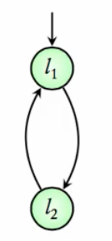
MODULE main
VAR
location : {l1, l2};
ASSIGN
init(location) := l1;
next(location) := case
location = l1 : l2;
location = l2 : l1;
esac;
3. Running NuSMV Commands
Assuming the above code is saved in a file named intro_demo.smv, follow these steps in the terminal:
NuSMV -int
This starts NuSMV in interactive mode.
Within NuSMV, enter:
read_model -i intro_demo.smv
flatten_hierarchy
encode_variables
build_model
read_model loads the model file.flatten_hierarchy processes module hierarchies.encode_variables encodes variables for model checking.build_model completes the model construction.
Alternatively, do NuSMV -int intro_demo.smv, then go.
4. Exploring the Model
- To check the initial state:
pick_state -i
- Expected output:
location = l1
- To simulate transitions for 10 steps:
simulate -i -k 10
- You will observe the system alternating between
location = l1 and location = l2.
- To view all reachable states:
print_reachable_states -v
- Output confirms two reachable states:
location = l1 and location = l2.
5. Extended Example: Program Graph with Variable
Now, consider a system with:
States l1 and l2.
An integer variable x ranging from 0 to 100.
Transition from l1 to l2 allowed only if x < 10.
When moving from l2 to l1, x increments by 1 (bounded by 100). NuSMV supports only bounded variables.
MODULE main
VAR
location : {l1, l2};
x : 0..100;
ASSIGN
init(location) := l1;
init(x) := 0;
next(location) := case
(location = l1) & (x < 10) : l2;
(location = l2) : l1;
TRUE : location; # Default: don't change location
esac;
next(x) := case
(location = l1) : x;
(location = l2) & (x < 100) : x + 1;
TRUE : x;
esac;
6. Running and Simulating the Extended Model
To exit the current session use the command quit
Load and build the model as before:
read_model -i pg_demo.smv
flatten_hierarchy
encode_variables
build_model
or
NuSMV -int pg_demo.smv
go
Check the initial state:
pick_state -i
Expected:
location = l1, x = 0- Simulate 15 steps:
simulate -i -k 15
- Observe how
location alternates and x increments when transitioning from l2 to l1.
- Print reachable states:
print_reachable_states -v
- You should see $21$ reachable states, due to combinations of
location and x values.
7. Model with Boolean and Enum Variables
Example with: Boolean variable request,
Enum variable status is either ready or busy
- Initial state:
status = ready, request unspecified (hence two initial states)
- Transitions depend on request value
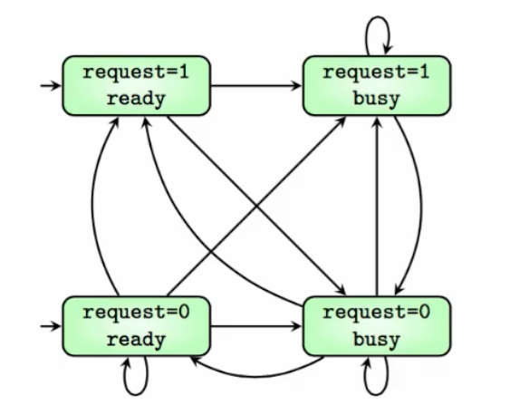
MODULE main
VAR
request : boolean;
status : {ready, busy};
ASSIGN
init(status) := ready;
next(status) := case
request : busy;
TRUE : {ready, busy};
esac;
8. Exploring and Simulating
Loading and build:
NuSMV -int request_busy_demo.smv
go
-
See all states (4 total):
print_reachable_states -v
-
Simulate starting from an initial state
-
pick_state -i to select an initial state
-
simulate -i -k 3
You can observe transitions between various request and status values. You also have to choose the next transitions to take.
9. Specifying and Checking Requirements
A transition system satisfies a requirement if all its executions satisfy the requirement.
NuSMV supports temporal logic specifications, especially LTL (Linear Temporal Logic), to verify properties such as:
- G (Globally): Property holds in all states of all executions. eg.,
G(x>=0) is true in EE 1. G(request=0) is false in EE 2 but is true for the third execution in EE 2.
- F (Eventually): Property holds at some point in all executions.
F(request=1) is false in EE 2 but true for the first and second executions in EE 2.
Example 1: Check if x >= 0 always holds in pg_demo.smv
NuSMV -int pg_demo.smv
go
check_ltlspec -p "G (x >= 0)"
NuSMV output will confirm whether the specification is true.
Example 2: Check if request = FALSE always holds in request_busy_demo.smv
NuSMV -int request_busy_demo.smv
go
check_ltlspec -p "G (request = FALSE)"
F(request=1) is false in EE 2 because of the third execution.
NuSMV will state that the specification is false and provide a counterexample execution.
Example 3: Check if eventually x >= 5 holds in pg_demo.smv (see Example Execution 1).
NuSMV -int pg_demo.smv
go
check_ltlspec -p "F (x >= 5)"
Expected output: Specification F x >= 5 is true
Combining G and F
Example 4: Check if whenever request is true, status eventually becomes busy in request_busy_demo.smv
NuSMV -int request_busy_demo.smv
go
check_ltlspec -p "G (request = TRUE -> F (status = busy))"
NuSMV should confirm this property is true. This is not easy to check by just looking at the transition system.
10. Summary
- Writing transition systems using
VAR and ASSIGN blocks in NuSMV.
- Specifying initial states using
init.
- Defining transitions using
next with case statements.
- Running NuSMV commands.
- Checking temporal logic requirements (G and F properties) using
check_ltlspec.
This lecture prepares you to model systems and formally verify their properties using NuSMV.
Part 2: Modeling Hardware Circuits in NuSMV
Introduction
In this lecture, we explore how to describe hardware circuits using the NuSMV tool. Building on prior knowledge of modeling simple transition systems, we delve into three parts:
- Modeling a simple circuit.
- Exploring more complex circuits like NAND gates.
- Using hierarchical designs and modules, culminating in a 3-bit counter example.
1. Simple Circuit Modeling
Circuit Description
- Inputs:
x and r (both boolean).
- Output:
y = NOT of XOR of x and r.
- Next state of
r: XOR of current x and r.
x is nondeterministic (can be either 0 or 1).- Initial value of
r is false; x can start as true or false.
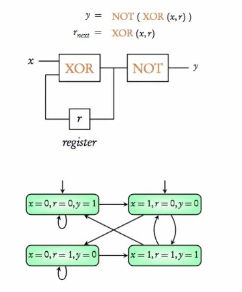
MODULE main
VAR
x : boolean;
r : boolean;
DEFINE
y := !(x xor r);
ASSIGN
init(r) := FALSE;
next(r) := x xor r;
Key Modeling Details in NuSMV
- Variables
x and r declared in VAR block.
r's next value is assigned with a delay using next(r) := x xor r.- Output
y depends immediately on current values; modeled using DEFINE y := !(x xor r).
y is not declared in VAR because it does not affect state space.- Number of states: 4 (2 choices for
x * 2 for r).
Simulation and Reachable States
-
The command NuSMV -int circuit_demo1.smv launches interactive mode.
-
Use the command go instead of read_model flatten_heirarchy, encode_variables and build_model -- same functionality.
-
Using print_reachable_states -v shows the 4 possible states.
-
Using print_fair_transitions -v shows all the 8 possible transitions.
-
Simulation illustrates how r evolves over steps, while y updates immediately.
-
Each state has two possible successors due to nondeterministic x.
-
pick_state -i to pick an initial state.
-
simulate -i -k 5 simulates the model for five steps.
Important Notes
Use of DEFINE is crucial for outputs depending on current state without delay.
State space is determined solely by variables in VAR.
2. NAND Gate Examples
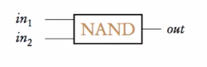
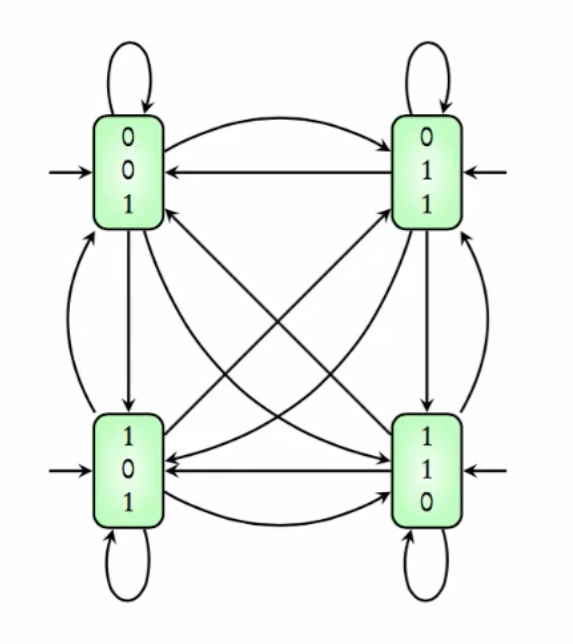
MODULE main
VAR
in1 : boolean;
in2 : boolean;
DEFINE
out := !(in1 & in2);
NAND Gate With Zero Delay
Inputs: in1, in2 (boolean).
Output: out = ! (in1 & in2), defined with zero delay.
No initial states defined; all 4 input combinations are initial.
Transitions are unconstrained; any state can transition to any other.
NuSMV -int nand_demo1.smv followed by go to load the model.print_reachable_states -v to see the set of reachable states.pick_state -i Since we have not defined any initial state, any state can be initial.simulate -i 5 Simulates the model for five steps. Here, all transitions are possible.
NAND Gate With Unit Delay
out declared as a boolean variable with initial value true.- Next value of
out assigned as NAND of current inputs: next(out) := !(in1 & in2);.
- Inputs
in1 and in2 remain nondeterministic.
- Number of states: 8 (2 × 2 × 2 variables).
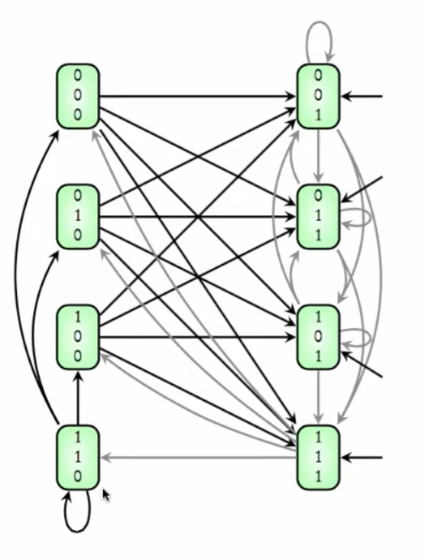
MODULE main
VAR
in1 : boolean;
in2 : boolean;
out : boolean;
ASSIGN
init(out) := TRUE;
next(out) := !(in1 & in2);
NuSMV -int nand_demo2.smv followed by go to load the model.print_reachable_states -v to see all the reachable states.pick_state -i to pick an initial state.simulate -i -k 5 to simulate for 5 steps.
Behavior and Transitions
- Initial states: 4 states with
out = TRUE combined with all input values.
- Transitions depend on current inputs; output reflects delayed NAND operation.
- Demonstrates modeling of hardware delay in NuSMV.
3. Modular and Hierarchical Designs
- Defining a
NAND module nand2 with inputs in1, in2 and output out.
- The value of
out is updated with unit delay.
- Enables reuse and hierarchical design.
MODULE nand2(in1, in2)
VAR
out : boolean;
ASSIGN
init(out) := TRUE;
next(out) := !(in1 & in2);
MODULE main
VAR
input1 : boolean;
input2 : boolean;
q : nand2(input1, input2);
-
NuSMV -int nand_demo3.smv, go
-
print_reachable_states -v :
-
State space consists of input1, input2, and q.out.
-
Number of states: 8.
-
pick_state -i to pick initial state.
-
simulate -i -k 3 to simulate a run for 3 steps.
Using Multiple NAND Modules
Modules becomes more useful while reusing components.
Instantiate two NAND modules q1 and q2 with inputs (x1, x2) and (y1, y2).
Output computed as XOR of q1.out and q2.out.
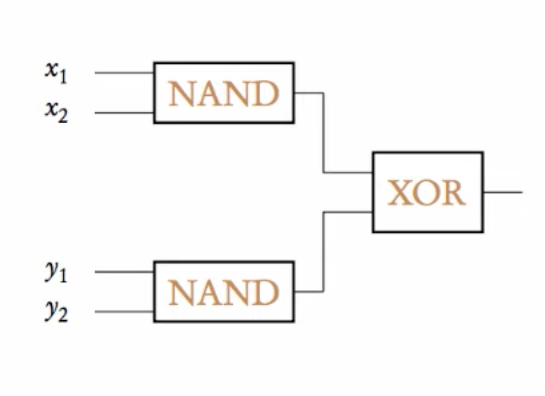
MODULE main
VAR
x1 : boolean; x2 : boolean;
y1 : boolean; y2 : boolean;
q1 : nand2(x1, x2);
q2 : nand2(y1, y2);
DEFINE
fout := q1.out xor q2.out;
MODULE nand2(in1, in2)
VAR
out : boolean;
ASSIGN
init(out) := TRUE;
next(out) := !(in1 & in2);
- Variables:
x1, x2, y1, y2, q1.out, q2.out.
- Number of states: 64 (2⁶).
Hierarchical NAND Circuit with Feedback
Two NAND gates connected in a feedback loop. Inputs x and y are boolean. Two variables q1 and q2 of nand2 type are instantiated with interdependent inputs.
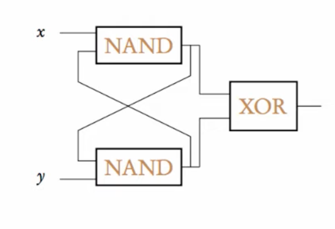
MODULE main
VAR
x : boolean;
y : boolean;
q1 : nand2(x, q2.out);
q2 : nand2(q1.out, y);
DEFINE
fout := q1.out xor q2.out;
MODULE nand2(in1, in2)
VAR
out : boolean;
ASSIGN
init(out) := TRUE;
next(out) := !(in1 & in2);
-
Inputs: x, y.
-
Variables: q1 takes (x, q2.out), q2 takes (q1.out, y).
Feedback loop between two NAND gates.
-
NuSMV -int nand_demo4.smv, go to load the model.
-
print_reachable_states -v
-
Number of states: 16 (2⁴).
-
Initial states: Both q1.out and q2.out start as TRUE.
-
pick_state -i to pick an initial state.
-
Next states computed synchronously using NAND of inputs.
- Number of states = 16 (2 × 2 × 2 × 2 for
x, y, q1.out, q2.out).
- Initial values for
q1.out and q2.out are TRUE as per module definition.
- Next states computed by
NAND on current inputs.
- Feedback between
q1 and q2 creates complex state transitions.
- Simulations show how output variables update synchronously.
NuSMV -int nand-demo5.smv
go
print_reachable_states -v
pick_state -i
simulate -i k 5
4. Example: 3-Bit Counter Using Modules
- Module: counter_cell
- Input: carryin (boolean).
- Variables:
value (bit), carryout (boolean).
carryout defined as carryin & value.- Next state of value is
value XOR carryin.
bit0 carryin is always TRUE.
bit1 and bit2 carryin depend on previous bit's carryout.
This constructs a synchronous 3-bit binary counter.
- Operation and State Transitions
Initial state: all bits
FALSE.
Each step updates all bits simultaneously.
The counter counts from 000 to 111 and wraps around.
Demonstrates synchronous composition: all modules update in lockstep.
5. Summary
- NuSMV models hardware circuits as transition systems with boolean variables.
- Variables in
VAR define the state space; outputs dependent on current state can be modeled with DEFINE.
- Using
next(variable) captures unit delay behavior.
- Modules enable hierarchical and reusable designs.
Feedback loops and synchronous composition are naturally expressed with modules.
- The 3-bit counter example illustrates practical synchronous module composition.
- Future topics include asynchronous composition, where modules update independently.
- This lecture provided a detailed journey from simple circuits to hierarchical modular designs in NuSMV, emphasizing state space modeling, delays, and the power of modularity in hardware description.
Part 3: Modeling Parallel Systems using NuSMV
We cover modeling synchronous and asynchronous parallel systems, mutual exclusion, and concurrent programs using NuSMV. We explore examples with traffic lights, mutual exclusion for shared resources, and concurrent programs manipulating a shared variable.
1. Introduction to Parallel Systems
- Parallel systems are also called concurrent systems.
- Two main kinds:
- Synchronous systems: All components move simultaneously at each transition step.
- Asynchronous systems: Components move independently; one component transitions at a time.
2. Traffic Light Example: Synchronous vs Asynchronous Systems
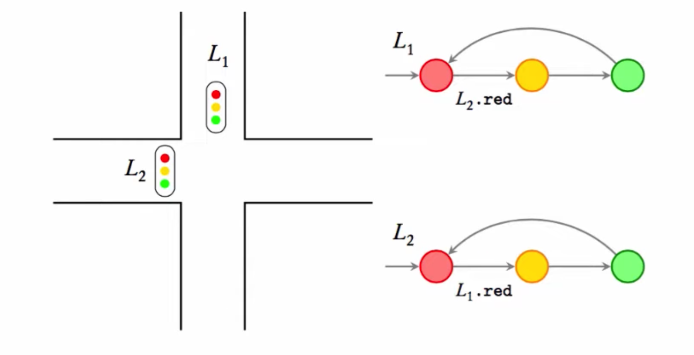
System Description
- Two traffic lights:
l1 and l2.
- Each has three states:
red (r), yellow (y), green (g).
- Interaction constraints:
- A light can only go from
red to yellow if the other light is red.
- A light can remain in
red or green for arbitrary periods.
- A light must go from
yellow to green immediately in the next transition.
- Goal: Prevent both lights turning green simultaneously.
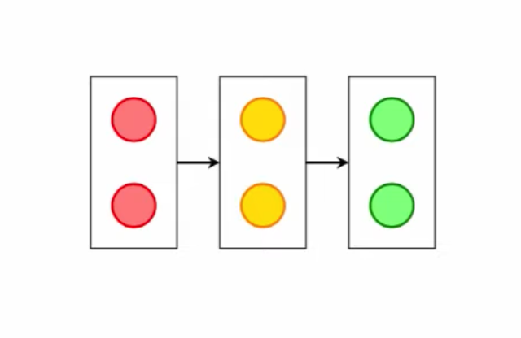
MODULE light(other)
VAR
state : {r, y, g};
ASSIGN
init(state) := r;
next(state) := case
state = r & other = r : {r, y};
state = y : g;
state = g : {g, r};
TRUE : state;
esac;
MODULE main
VAR
tl1 : light(tl2.state);
tl2 : light(tl1.state);
- Both lights update states simultaneously.
- Problem: Both lights can become green at the same time, which is undesirable.
Asynchronous Composition
- Use
process keyword to declare asynchronous modules.
- Only one process executes at a time, chosen nondeterministically.
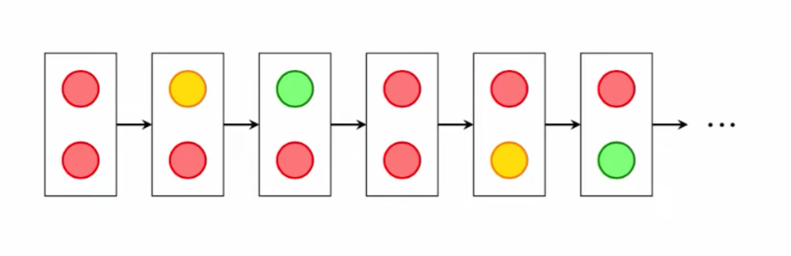
MODULE main
VAR
tl1 : process light(tl2.state);
tl2 : process light(tl1.state);
NuSMV -int light_asyn_demo.smv
go
check_ltlspec -p "!( F (tl1.state=g & tl2.state = g))
- Ensures only one light changes state per step.
- Prevents both lights from turning green simultaneously.
- This models asynchronous behavior where no global clock synchronizes transitions.
Verification
-Property checked: Never both green simultaneously.
- NuSMV confirms the property holds in asynchronous composition.
print_reachable_states -v
pick_state -i
simulate -i -k 3
3. Mutual Exclusion Example
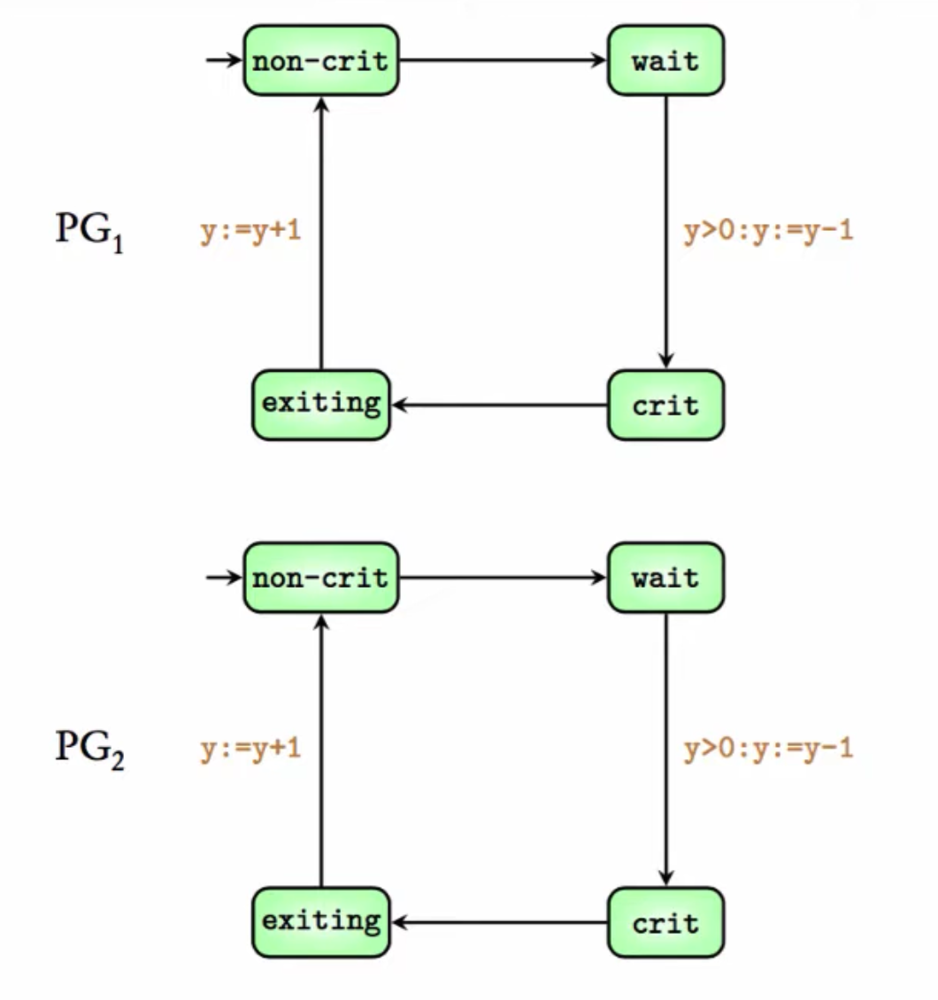
MODULE thread(y)
VAR
location : {nc, w, c, e};
ASSIGN
init(location) := nc;
next(location) := case
location = nc : {nc, w};
location = w & y > 0 : c;
location = c : {c, e};
location = e : nc;
TRUE : location;
esac;
next(y) := case
location = w & y > 0 : y - 1;
location = e & y = 0 : y + 1;
TRUE : y;
esac;
MODULE main
VAR
ymain : 0..1;
p1 : process thread(ymain);
p2 : process thread(ymain);
ASSIGN
init(ymain) := 1;
Two parallel programs sharing a resource.
- Each program has 4 states:
- noncritical (nc)
- waiting (w)
- critical (c)
- exiting (e)
- A global variable
y (0 or 1) controls access.
- Programs enter critical section only if
y > 0, decrementing y.
- On exit,
y is incremented.
- Mutual exclusion means both cannot be in critical section simultaneously.
NuSMV -int mutex_demo1.smv
go
check_ltlspec -p "!F(p1.location=c & p2.location=c)"
Verification
- Property checked: Never both in critical section simultaneously.
- NuSMV confirms the property holds.
pick_state -i
simulate -i -k 3
4. Concurrent Programs with Shared Variable
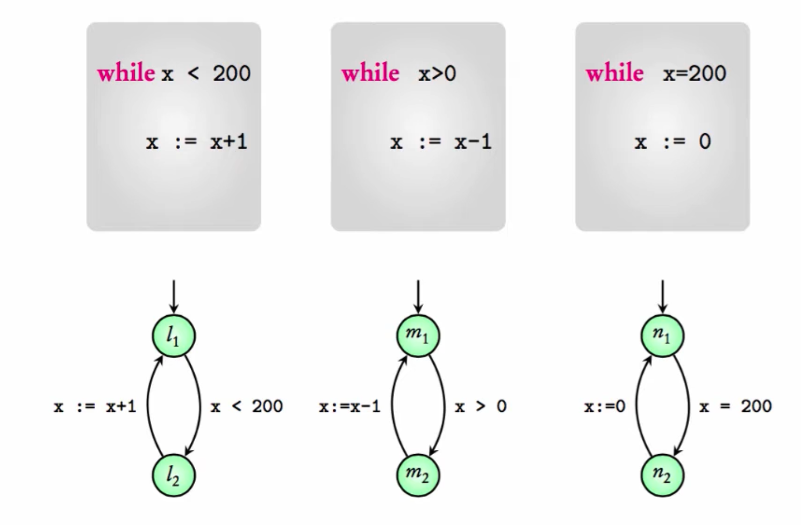
- Three parallel programs manipulating integer
x (bounded between -1000 and 1000).
MODULE program1(x)
VAR
location : {l1, l2};
ASSIGN
init(location) := l1;
next(location) := case
location = l1 & x < 200 : l2;
location = l2 : l1;
TRUE : location;
esac;
next(x) := case
location = l2 & x < 1000 : x + 1;
TRUE : x;
esac;
MODULE program2(x)
VAR
location : {m1, m2};
ASSIGN
init(location) := m1;
next(location) := case
location = m1 & x > 0 : m2;
location = m2 : m1;
TRUE : location;
esac;
next(x) := case
location = m2 & x > -1000 : x - 1;
TRUE : x;
esac;
MODULE program3(x)
VAR
location : {n1, n2};
ASSIGN
init(location) := n1;
next(location) := case
location = n1 & x = 200 : n2;
location = n2 : n1;
TRUE : location;
esac;
next(x) := case
location = n2 : 0;
TRUE : x;
esac;
MODULE main
VAR
x : -1000..1000;
thread1 : process program1(x);
thread2 : process program2(x);
thread3 : process program3(x);
ASSIGN
init(x) := 0;
NuSMV -int three_program_demo.smv
go
check_ltlspec -p "G (x>=0)"
Verification
- Property:
x always non-negative.
- NuSMV returns
false with a counterexample where x becomes negative due to interleaving of increments and decrements.
- Simulation shows behavior leading to
x = -1.
5. Summary
- Synchronous systems: All components transition simultaneously.
- Asynchronous systems: Only one component transitions at a time, modeled using the
process keyword.
- Mutual exclusion: Modeled with shared variables and state machines ensuring critical sections do not overlap.
- Concurrent programs: Interaction of multiple programs on shared variables can be modeled and verified using NuSMV.
- NuSMV can check temporal properties and find counterexamples to incorrect models.
- Modeling requires care; simulation help identify errors.